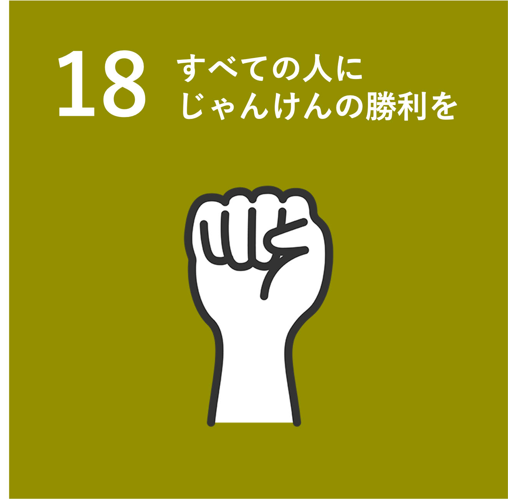

このサイトでは、じゃんけんを通じて誰もが成功体験を味わうことができます。
じゃんけん（漢字表記：石拳、両拳、雀拳）は、3種類の指の出し方（グー・パー・チョキ）でいわゆる三すくみの関係を構成し、その強弱関係により勝敗を決める遊戯である。 じゃんけんをする時、かけ声として主に「じゃんけんぽん」と言うことが多い、全員が同じ形を出して勝負が決まらなかった時、あるいは3人以上での勝負の時にグー、チョキ、パーの全てが出た場合は「あいこでほい」「あいこでしょ」と言って、もう一度やり直す。[1] 地域によって「じゃいけん」「いんじゃん」などさまざまな呼び方がある[2]。アメリカ合衆国などの英語圏の場合、多くは"Rock Paper Scissors"という呼称が使われているが、"Scissors Paper Stone"などと表現されることもある（表記上の揺れは数種類ある[注 1]。略号はRPS[3]）。 フランス語圏では多くの場合は"Pierre-papier-ciseaux"という呼称が使われているが、"chifoumi"という言葉も使われる。ドイツ語圏では"Schere, Stein, Papier"という言葉が使われていて、スペイン語圏ではスペインを含め、多くの国では"Piedra, papel o tijera"という言葉が使われているが[4]、メキシコでは"chin chan pú"や"pikachú"と呼ばれることもあり、コロンビアではよく"¡chim, pus pás!"と呼ばれ、ペルー、パラグアイ、一部の国々、そしてポルトガル語圏のブラジルでは日本語「じゃんけんぽん」から由来した"jan-ken-pon"と"jokenpô"[5][6]やhakembo[7]と呼ばれている。イタリアでは主に"Morra cinese"と呼ばれているが、"sasso-carta-forbice"や"carta-forbice-sasso"など呼ばれることもある。中華圏では主に「石头，剪刀，布」と呼ばれる。
詳しくはこちら
最近、「必ずじゃんけんに勝てるサイト」を偽った怪しいサイトが報告されています。どうかお気をつけください。
・ブラウザはChromeを推奨。Firefoxも可。Safariはよく動かない時があります。
・カメラの情報は鯖には送信しておりません。ご安心ください。